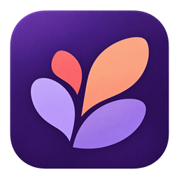

Seu espaço de criação
Uma ideia. Muitas possibilidades.
Vamos criar juntos
Conversa de exemplo
Estudo visual — nada será enviado.Enter para uma nova linha

Forge Estudo visual · 02Vidro fumê, reflexos sutis e texto quente. A cena respira; a conversa permanece legível.
Esta é uma referência visual interativa, não o aplicativo. Conversa ilustrativa, sem login, envio ou conexão com projetos.
Nova cena gerada para este estudo. Não substitui automaticamente a arte aprovada do produto.
Ler a especificação